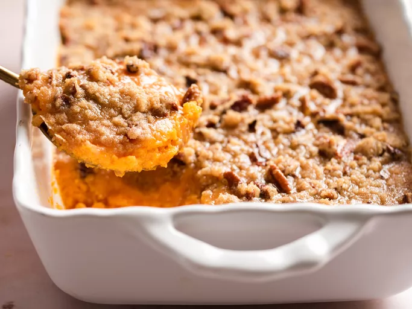

Casserole Recipe

Photo by Preethi Venkatram/Allrecipes
Prep Time:
20 mins
Cook Time:
45 mins
Total Time:
1 hrs 5 mins
Servings:
12
Yield:
1 (9x13-inch) casserole
Ingredients
4 cups peeled, cubed sweet potatoes
2 large eggs, beaten
½ cup white sugar
½ cup milk
4 tablespoons butter, softened
½ teaspoon vanilla extract
½ teaspoon salt
Egg
½ cup packed brown sugar
⅓ cup all-purpose flour
3 tablespoons butter, softened
½ cup chopped pecans
Steps
Cook and mash the sweet potatoes.
Mix the casserole ingredients and transfer to a baking dish.
Make the topping and sprinkle it over the sweet potato mixture.
Bake until the topping is lightly browned.
Back to Home...